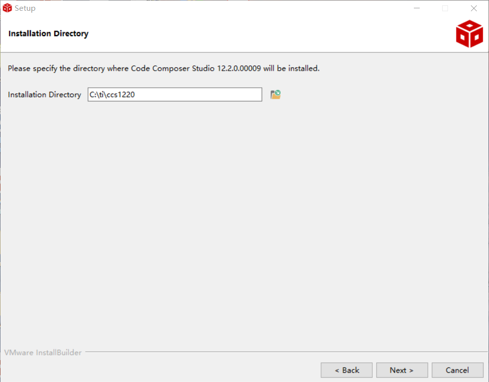
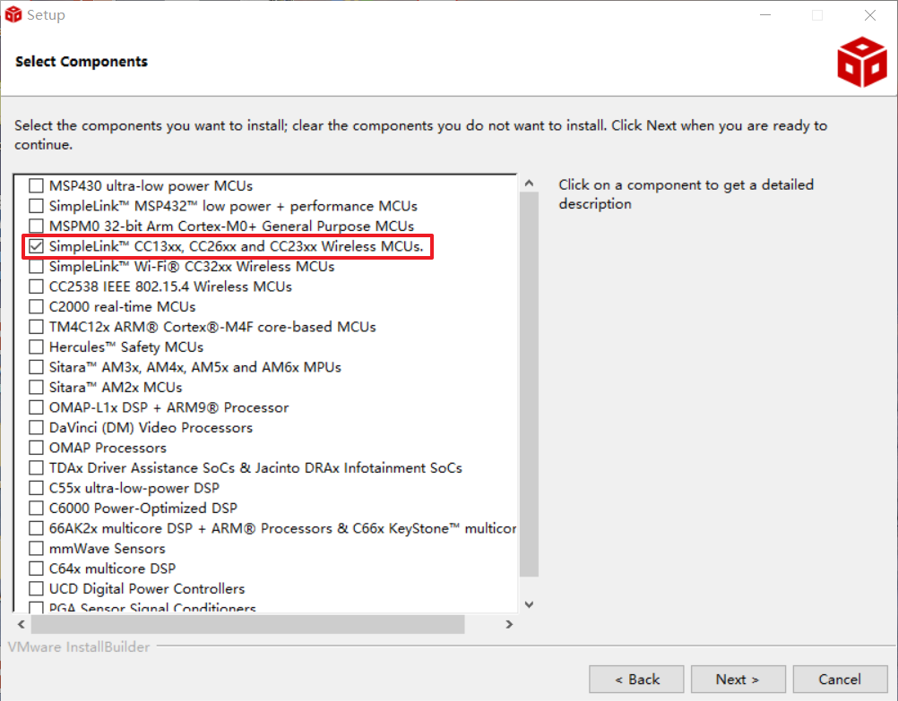
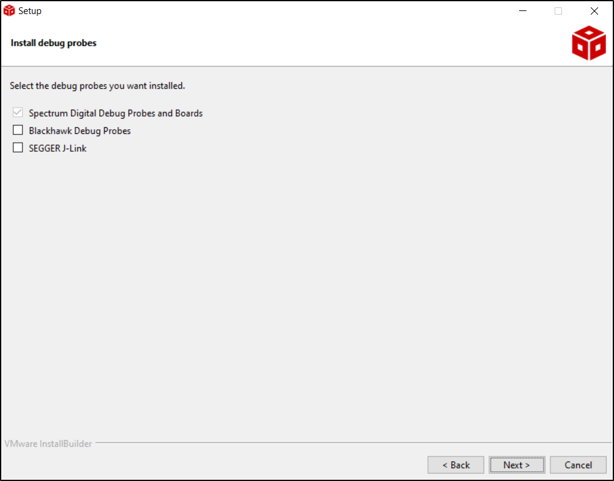
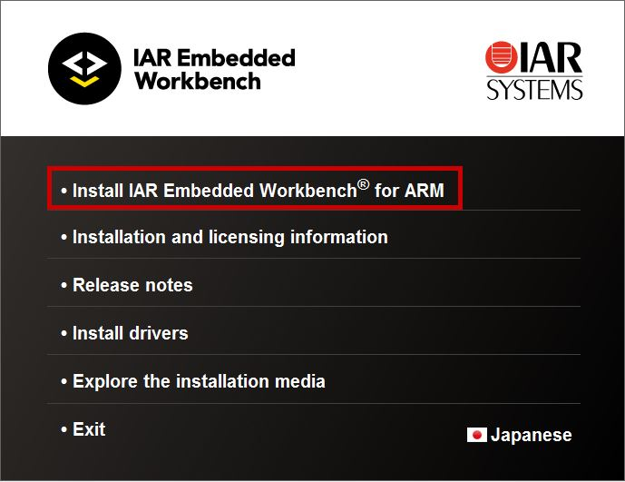
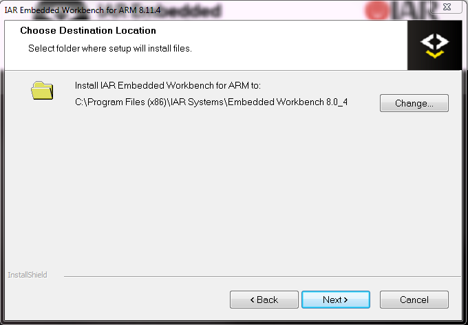
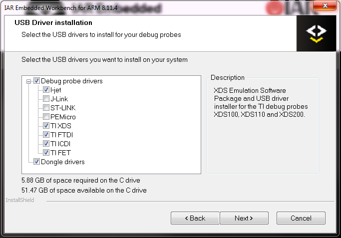

Introduction to the SimpleLink CC13xx/CC26xx SDK¶
The SimpleLink CC13xx/CC26xx SDK delivers components that enable engineers to develop applications on the Texas Instruments SimpleLink CC13xx or CC26xx family of wireless microcontroller (MCUs). This powerful software toolkit provides a cohesive and consistent software experience for all SimpleLink CC13xx or CC26xx wireless MCU users by packaging essential software components, such as a Bluetooth® Low Energy (BLE) protocol stack supporting Bluetooth 5, Thread 1.1 networking stack based on OpenThread (https://github.com/openthread/openthread), TI’s 15.4 Stack, RF-Proprietary examples, a Zigbee stack as well as the TI-RTOS kernel and TI Drivers in one easy-to-use software package along with example applications and exhaustive documentation. In addition, the Dynamic Multi-Protocol Manager (DMM) software component enables multiprotocol development on a single SimpleLink wireless MCU through time division multiplexing.
The SimpleLink MCU portfolio offers a single development environment that delivers flexible hardware, software and tool options for customers developing wired and wireless applications. With 100 percent code reuse across host MCUs, Wi-Fi™, Bluetooth Low Energy, Sub-1GHz devices and more, choose the MCU or connectivity standard that fits your design. A one-time investment with the SimpleLink software development kit (SDK) allows you to reuse often, opening the door to create unlimited applications. For more information, visit www.ti.com/simplelink.
Note
The following devices and resources are also included in the SimpleLink CC13xx/CC26xx SDK: CC13x1x3 or CC26x1x3 and CC13x4 or CC26x4
Prerequisites¶
The user is expected to have the following:
CC13xx or CC26xx LaunchPad
A computer running a supported operating system listed in the Release Notes
At least one of the following IDE supported by the SimpleLink CC13xx/CC26xx SDK:
CCS
IAR for Arm
GNU Arm Embedded Toolchain
FreeRTOS (Optional - Needed for FreeRTOS projects.) The SimpleLink CC13xx/CC26xx SDK does not deliver FreeRTOS sources. User is expected to download it from FreeRTOS website if they want to use FreeRTOS with the SDK.
SDK - Download and Installation¶
Using the SDK Online¶
A quick and easy way to start working with the SDK is to use TI Resource Explorer on dev.ti.com. This online tool lets you explore the contents of the SimpleLink CC13xx/CC26xx SDK. You can build the examples directly using the cloud version of Code Composer Studio. If you choose to use the SDK online, there is no need to download the SDK to your local computer or install any tools (other than the TI Cloud Agent for first time users).
Installing the SDK¶
You can also download the SimpleLink CC13xx/CC26xx SDK from TI Resource Explorer or the software product page on TI’s website.
IDE - Download and Installation¶
CCS Download and Installation¶
This section covers the required settings for a CCS installation. The CCS toolchain contains many features beyond the scope of this document. More information and documentation can be found on the Code Composer Studio tool page.
Check the SimpleLink CC13xx/CC26xx SDK release notes to see which CCS version to use and any required workarounds. Object code produced by CCS may differ in size and performance as compared to IAR produced object code.
Download CCS
CCS is available here: Code Composer Studio .
Refer to the SimpleLink CC13xx/CC26xx SDK release notes for the version that is compatible with this SDK.
You can choose between a single file (offline) installer and on-demand (web) installer.
Installation Options
During the installation, the following options are recommended:
We recommend that you use the default installation folder
Figure 1. Default CCS Installation Location¶
Select SimpleLink CC13xx and CC26xx Wireless MCUs is selected. You can select additional processor support options as needed.
Figure 2. Select Processor Support¶
To use a debug probe, select TI XDS Debug Probe Support and any other options you would like. The CC13xx or CC26xx LaunchPad uses TI XDS Debug Probe by default.
Figure 3. CCS Debugger Options¶
When the installation has completed, make sure that CC13xx/CC26xx Device Support is installed by checking for updates under Help -> Check for Updates.
Discovering the SDK in CCS
Install the SDK in the default location pointed to by the installer - c:\ti and restart CCS. CCS will automatically detect the latest install.
You can also Install products manually by selecting Window -> Preferences -> Code Composer Studio -> Products and clicking Install and navigating to the SDK installation location.
Code Composer Studio automatically discovers the SimpleLink CC13xx/CC26xx SDK if it installed in its default installation directory (
c:/ti). Once discovered by CCS, it defines a build environment variable named SIMPLELINK_CC13XX_CC26XX_SDK_INSTALL_DIR which is used by all SimpleLink CC13xx/CC26xx SDK projects.If a project is imported from a path other than what was specified during the SimpleLink CC13xx/CC26xx SDK installation, the SIMPLELINK_CC13XX_CC26XX_SDK_INSTALL_DIR variable must be redefined after the import proceeding at a project-by-project basis.
To redefine this variable:
Open the CCS project’s properties (Project -> Properties)
Navigate to Resource -> Linked Resources and edit SIMPLELINK_CC13XX_CC26XX_SDK_INSTALL_DIR and have it point to your imported root directory location.
(Optional) Using a Specific TI Arm Compiler
Verify Arm Compiler Tools version
If needed, the CCS and Arm compiler versions can be verified by going to into Help -> About Code Composer Studio. Under the Installation Details button, you can determine the Arm Compiler Tools version. Please ensure this version satisfies the version requirements as stated in the release notes.
If an update is required, refer to Installing a Specific TI Arm Compiler for the procedure to install the required TI Arm Compiler version.
Install a Specific TI Arm Compiler, refer to the following steps and Figure 5.
Help -> Install New Software
Under the Work with: drop-down list, select Code Generation Tools Update
Uncheck Show only the latest versions of available software
Expand TI Compiler Update.
Select the desired Arm Compiler Tools version as stated in the release notes.
Press Next to complete the installation. You may have to restart CCS afterwards.

Figure 5. TI Arm Compiler Version in Code Composer Studio¶
{kind=link}
IAR Download and Installation¶
This section covers the required settings for a IAR installation. The IAR toolchain contains many features beyond the scope of this document. More information and documentation can be found at IAR.com.
Not all components in the SimpleLink CC13xx/CC26xx SDK support IAR projects. Check the SimpleLink CC13xx/CC26xx SDK and component release notes to check IAR support, which IAR version to use and any required workarounds. Object code produced by IAR may differ in size and performance as compared to CCS produced object code.
Download IAR Download and install IAR Embedded Workbench for Arm. Please see the SDK release notes for what version of IAR the SDK supports. You can get IAR for Arm here: https://www.iar.com/iar-embedded-workbench/partners/texas-instruments/ti-wireless/
To get IAR, choose one of the following methods:
Download the IAR Embedded Workbench 30-Day Evaluation Edition – This version of IAR is free, has full functionality, and includes all of the standard features. The size-limited Kickstart evaluation option is not compatible with this SDK.
Purchase the full-featured version of IAR Embedded Workbench – For complete BLE application development using the CC13xx or CC26xx, TI recommends purchasing the complete version of IAR without any restrictions. You can find the information on purchasing the complete version of IAR.
Attention
The version required is stated in the release notes. Opening IAR project files with a previous version of IAR may cause project file corruption.
Installation Options Begin Installation by selecting Install IAR Embedded Workbench® for Arm.
Figure 6. IAR Installer¶
Click through the installation confirm windows and license agreement. We recommend installing to the default path
Figure 7. Default IAR Installation Location¶
Make sure to select TI XDS as one of the debug probe drivers. You may also select other drivers. The driver will be installed towards the end of the installation of IAR.
Figure 8. IAR Debugger Options¶